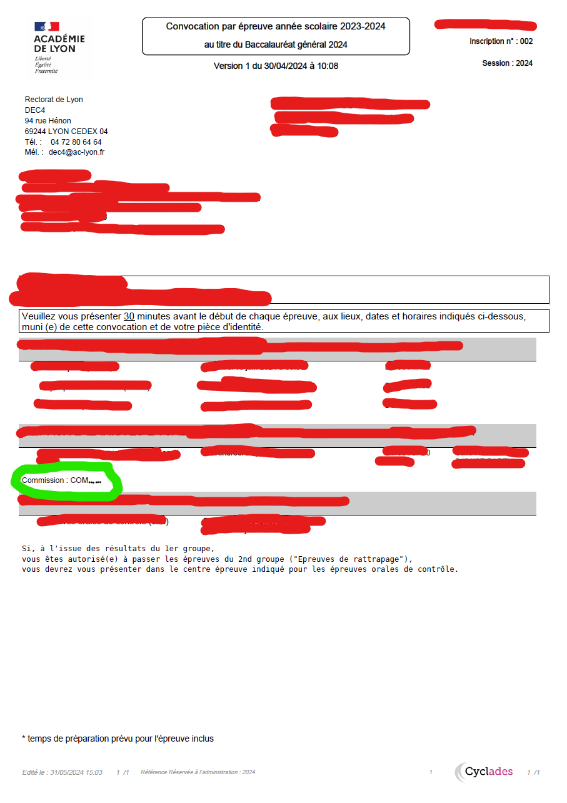

Ce site se base sur le numéro de commission inscrit sur votre convocation et recoupe les informations avec d'autres personnes pour trouver la spécialité en commun et ainsi prédire sur quel sujet vous allez sûrement être interrogé.
ATTENTION ! Ne pas prendre les informations données par ce site comme parole d'évangile, les informations saisies par les utilisateurs peuvent être fausses, les jurys peuvent changer, peut-être que ces numéros ne veulent rien dire et les professeurs sont libres de choisir le sujet qu'ils veulent même s'il ne correspond pas à leur matière. Ce site ne vous aidera pas si vous avez des sujets transversaux. Il est conseillé de bien préparer les deux sujets indépendamment des résultats du site. Je ne suis pas responsable des prédictions données.Comment récupérer son numéro de commission ? Se connecter à son espace cyclades. Cliquer sur la session du bac 2024 puis sur mes documents et télécharger le PDF "Convocation (5 épreuves). Le numéro de commission se trouve dans la section Grand oral en bas (voir image)
